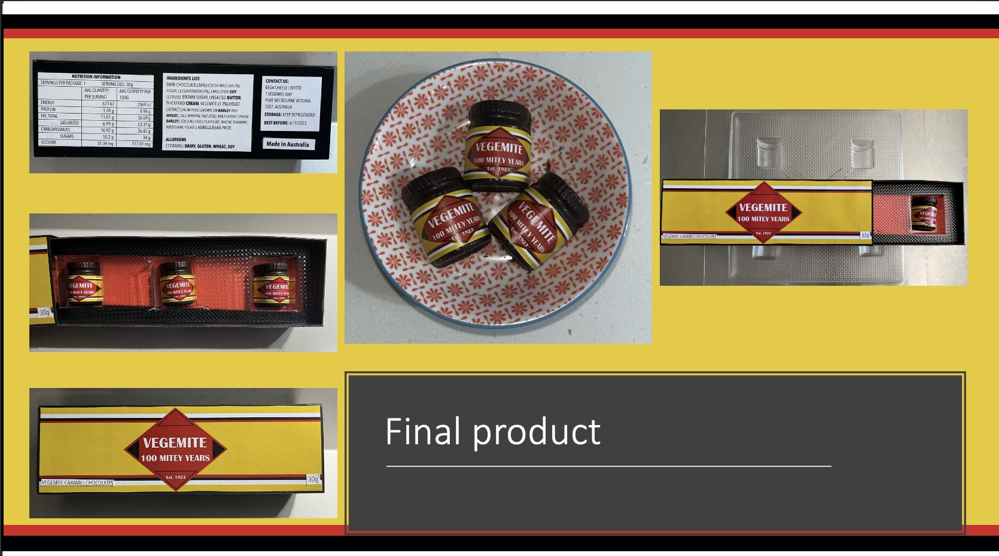
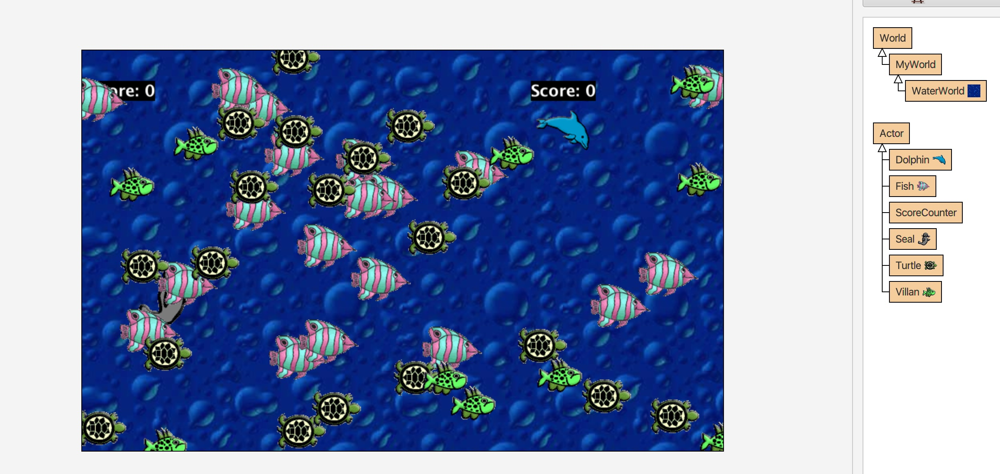

Technologies
Throughout my degree, I have become competent at teaching multiple teachnology
subjects. Each subject and classroom looks a little bit different.
With each subject I have linked a picture of a possible project that could be undertaken in the subject.

Food Technology
Food Technology equips students with the knowledge and skills to make informed decisions regarding food production, preparation, and consumption. The syllabus covers nutrition, food science, food safety, and contemporary food issues, cultivating a deep understanding of the relationship between food, health, and well-being. Students take part in in both theoretical and practical activities to develop skills related to food and nutrition. In stage 6, students build upon knowledge learnt in previous years whilst delving deeper into their criticzl thinking and understanding. They undertake less practical lessons though they are used to support the theory content.
Design and Technology
Design and Technology encourages students to explore the principles of design, innovation,
and production across various contexts. The syllabus focuses on developing creativity,
problem-solving abilities, and practical skills as students work through the design process
to create solutions to real-world issues. students learn to plan, produce, and evaluate
designed solutions using a range of materials and technologies through project based learning.
In year 12, Design and Technology has a major project that is submitted as part of their HSC mark

Textiles and Design
Textiles and Design focuses on the design, production, and evaluation of textile items.
Students explore the properties and uses of textiles in various contexts, such as apparel,
non-apparel, furnishing and textiles art. The syllabus highlights creativity, practical skills,
and the application of design principles in the development of textile products. This allows
students to express their individuality and cultural understanding through design.
In year 12, textiles has a major project that is submitted as part of their HSC mark

Computing
Computing provides students with a foundation in digital technologies, focusing on the development of computational thinking, problem-solving, and coding skills. The syllabus covers areas such as programming, data representation, and digital systems. This prepares students to navigate and contribute to an increasingly digital world. Practical tasks enable students to apply their knowledge to real-world scenarios, encouraging innovation and technical competency.
Industrial Technology - Timber
Timber introduces students to the design, production, and evaluation of timber products. The
syllabus emphasizes practical skills in woodworking, including the safe use of tools and machinery,
as well as the application of design principles. Students engage in hands-on projects, developing
craftsmanship and technical abilities while exploring the properties and uses of timber in various
contexts.
In year 12, timber has a major project that is submitted as part of their HSC mark
Industrial Technology - Metal
Metal focuses on the design, production, and evaluation of metal products. The syllabus provides
students with the opportunity to develop skills in metalworking, including the safe use of tools,
machinery, and welding techniques. Through practical projects, students learn to apply design
principles to create functional and aesthetically pleasing metal items, building their technical
competence and understanding of industrial processes.
In year 12, metal has a major project that is submitted as part of their HSC mark

Engineered Systems
Engineered Systems explores the principles and practices involved in designing and constructing systems that address real-world problems. The syllabus covers areas such as mechanical, electrical, and structural engineering, allowing students to understand and apply engineering concepts in practical contexts. Students engage in project-based learning, developing skills in problem-solving, critical thinking, and the application of engineering principles to design and evaluate functional systems.